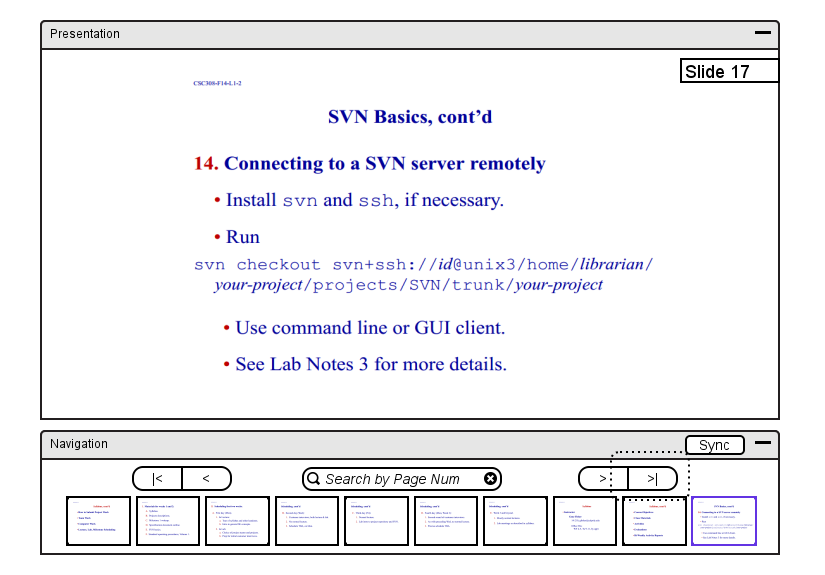
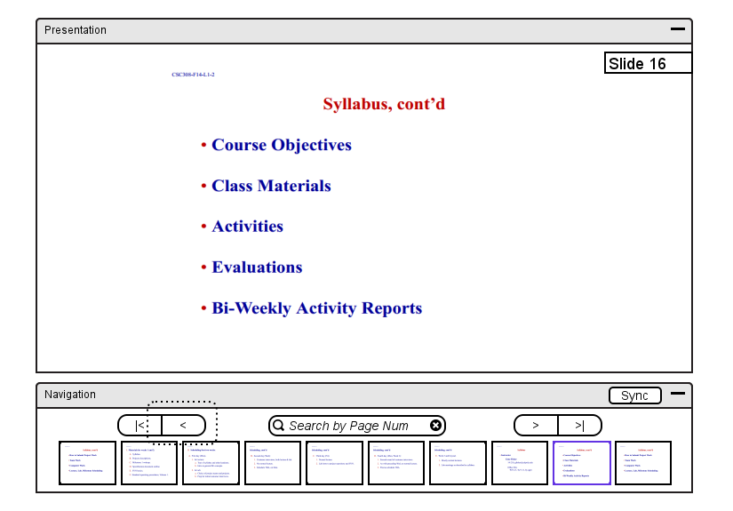
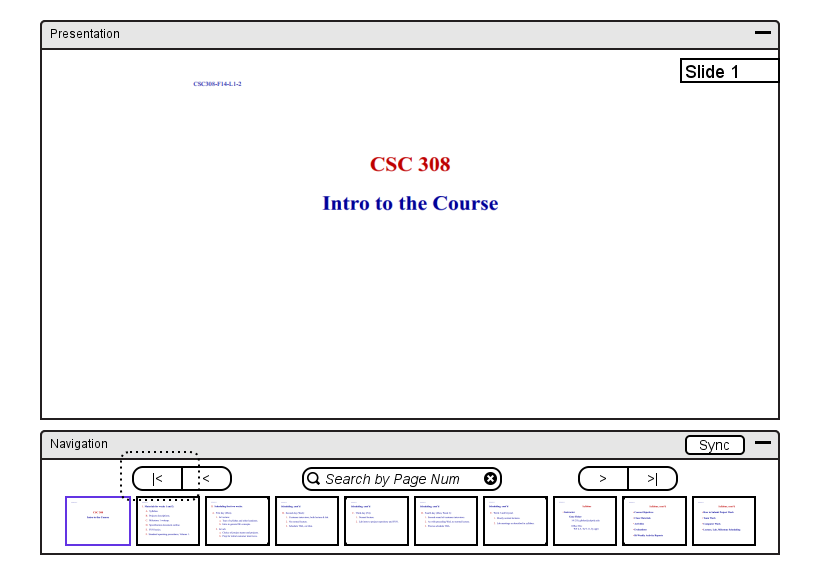
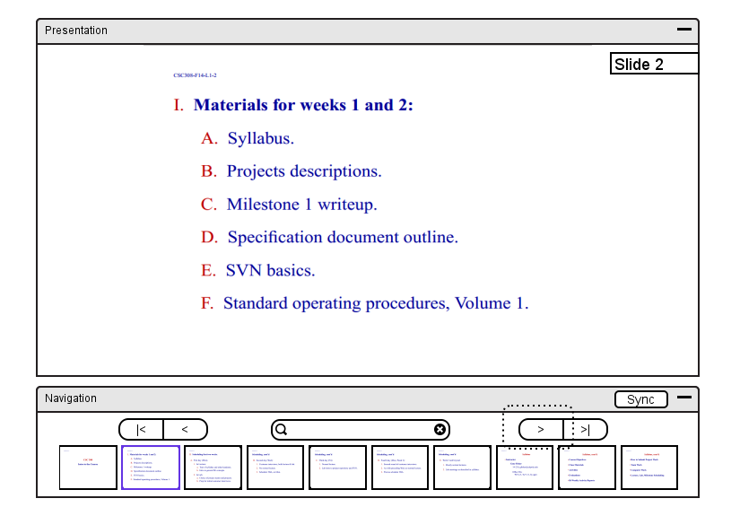
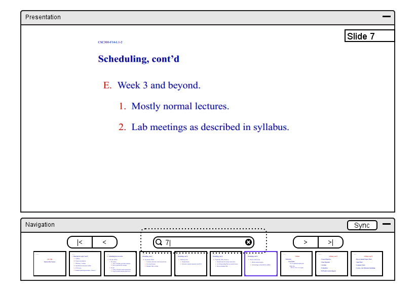

To switch to the most previous slide, the instructor chooses the '>|'
menu command. In response, the system displays the changed presentation
from Figure 8 to the window of the form shown in Figure 29.
Figure 29: Initial presentation view.

Figure 30: View after clicking '>|' button.
Sketches of views for choosing the left, beginning and end buttons are in
Figures 31, 32 and 33.

Figure 31: View after clicking '<' button.

Figure 32: View after clicking '|<' button.

Figure 33: View after clicking '>' button.
To search for a specific slide, the instructor types in the page number of the slide
in the 'Search by Page Num' search input. In response, the system
displays the changed presentation from Figure 29 to the window of the form
shown in Figure 34.

Figure 34: Slide search by page number.